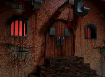
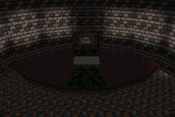
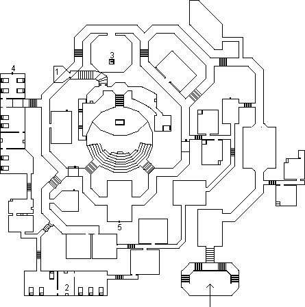

| 1 | Sherrell Ivanareh [Rescue Sherell Quest] |
| 2 | Cell Key |
| 3 | Switch, reveals switch at 4 |
| 4 | Switch, reveals switch at 5 |
| 5 | Switch, Opens the large doors to the central room. |
Leave us a message at: mgrounds@hotmail.com